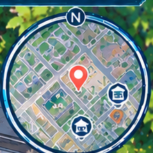

店員招呼：「一杯好茶，遇見更好的你！今天辦案走很多路吧？喝杯珍奶補充體力！」
剛起鍋茶香濃郁，補充體力！
快速解渴補充水分，提升好心情！
穿梭雙北各大路段，跑速 +60%！
店員親切問候：「Always Open, 7-Eleven！今天雙北調查辛苦囉，來份御飯糰或現煮拿鐵補充能量！」
嚴選台梗九號米與酥脆海苔，補充體力！
濃醇鮮乳與香醇咖啡豆，放鬆辦案心情！
回甘就像現泡，解膩生津恢復體力！
店長親切招呼：「天天都便宜，就是家樂福！全雙北量販互聯，提供充足調查能量補給！」
烘焙坊現做柔軟白吐司，快速填飽肚子！
1500ml 量販大容量，漫遊全城不怕缺水！
量販大補給：乾糧、能量棒與電解水！
廣播響起：「請支援收銀！買進美好生活，全聯生鮮產地直送！」
清脆爽口香甜多汁，迅速補充元氣！
非基改黃豆現磨濃醇，解渴恢復專注！
時令水果與綜合堅果，調查續航必備！
市場攤商熱情招呼：「歡迎來到在地市場！傳承數十載的正宗老店美味，生鮮現採、小吃現煮，吃了精神百倍！」
大骨高湯現煮油麵佐紅燒肉豆芽！
酥脆蛋酥搭配鮮甜高麗菜花生粉！
金黃現炸旗魚黑輪包裹水煮蛋！
「往淡水方向列車即將進站，請旅客依序排隊先下後上。」
九層塔香氣四溢，現炸金黃酥脆！
柴魚片與特調醬汁，吃完精神百倍！
🌊 微風徐徐吹過淡水河面，遠眺觀音山稜線，夕陽餘暉灑落棧道。
利用 307 公車與捷運時序比對，確認嫌犯不在場證明作假！
請出示正確的鐵證打臉：
你運用了公車乘車紀錄與 CCTV 軌跡分析，成功戳破嫌疑人的謊言，追回失竊公事包！
走到路邊公車站牌等車上車，體驗鳥瞰快轉過場。
親自走訪門市購買珍奶或茶葉蛋，維持體力。
會面警政巡官，調閱 4 分割監視器時空軌跡。
出示 307 公車刷卡紀錄，戳破嫌犯不在場證明！
本機啟動請在終端機輸入 npm start！上傳雲端後可填入 Render 提供的 wss://... 網址。
npm start
wss://...